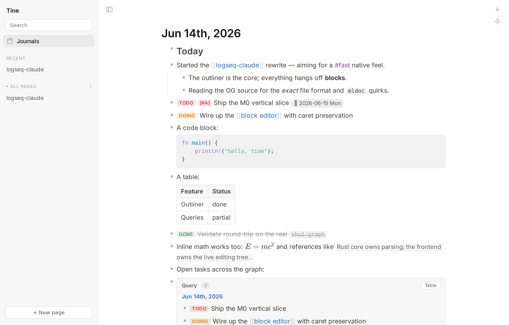
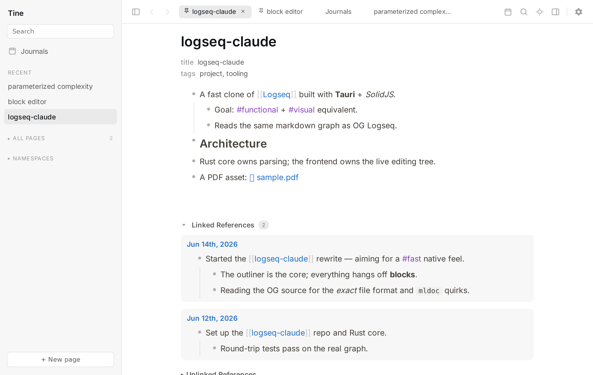
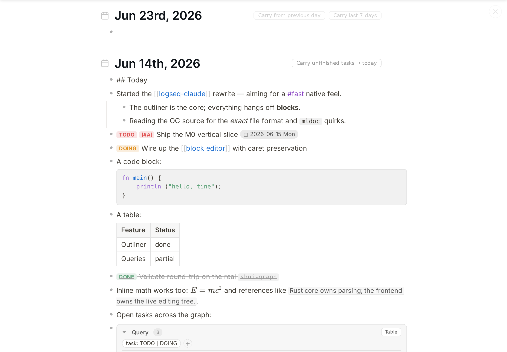
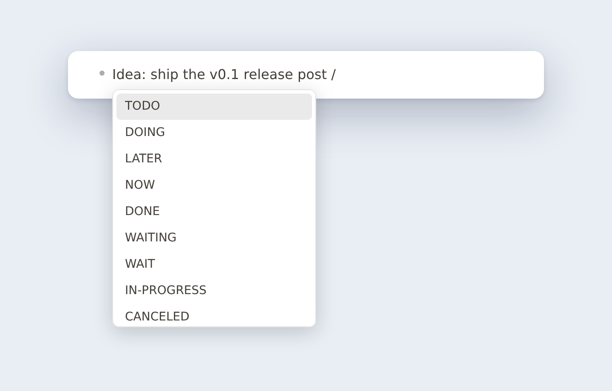
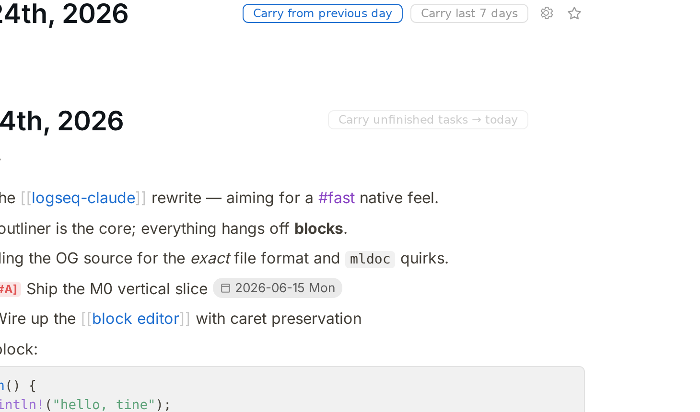
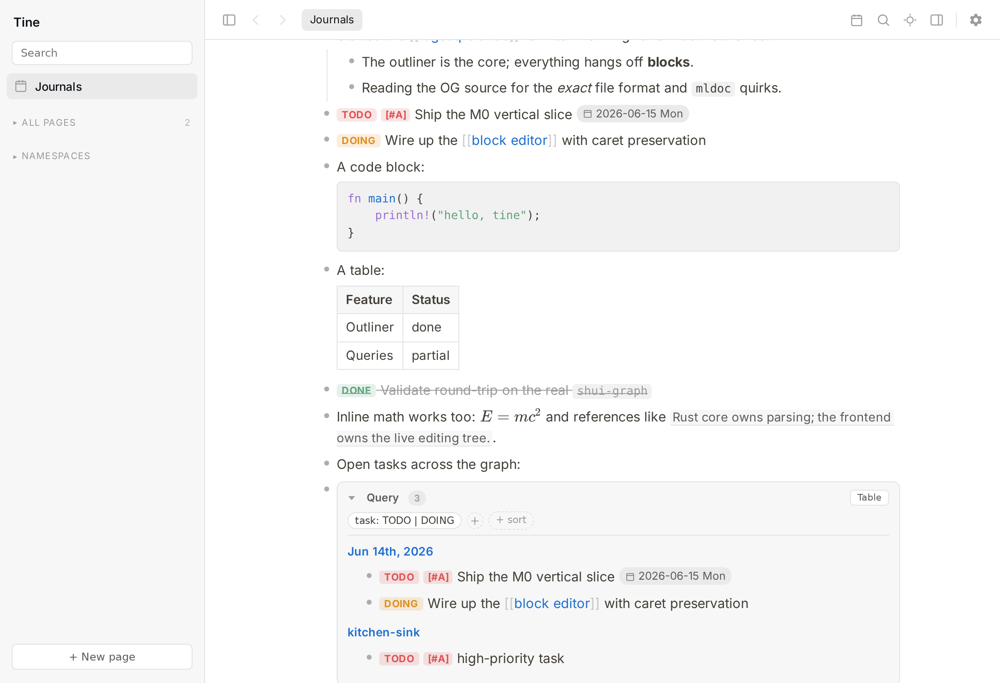
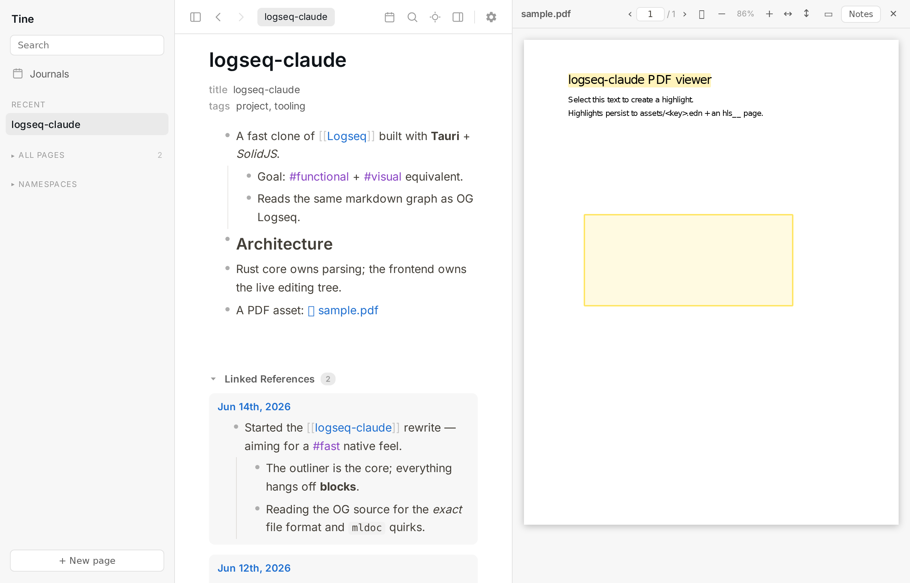
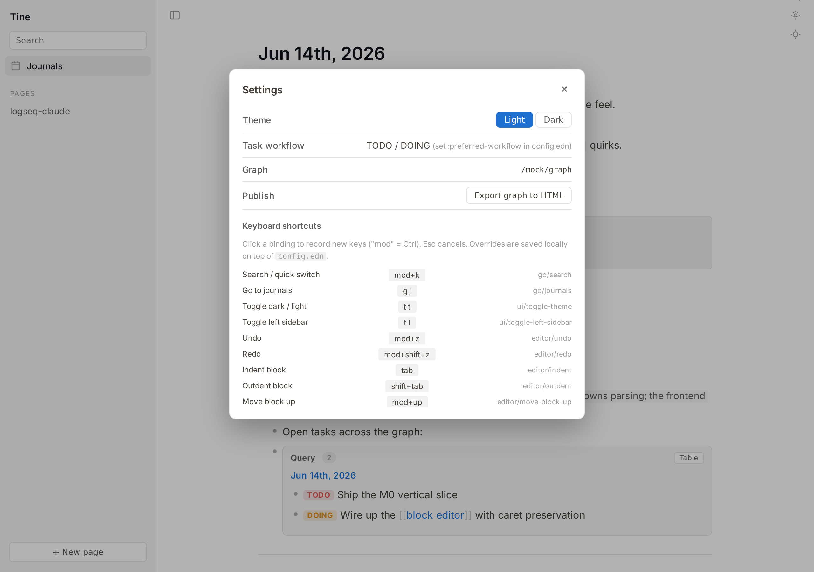

⚡
Native speed
A pure-Rust core and fine-grained SolidJS reactivity in a tiny Tauri/WebKit runtime — no Electron, no virtual-DOM churn. Typing stays in the frontend; whole-graph reads hit an in-memory index. It stays quick on large graphs.
Local-first · open source · works on your Logseq graph
Tine is a fast, local, Logseq-compatible outliner. It reads and writes the same Markdown files Logseq does — so you can switch between the two whenever you like, with no import, no export, and no lock-in.
Free & open source (AGPL-3.0). Linux is the primary, best-tested platform today; macOS & Windows builds are newer. Not yet 1.0.

We're long-time Logseq users and we have a lot of respect for what that project pioneered. Tine isn't a fork and it isn't a clone trying to pull you away. It's an independent reimplementation that deliberately targets Logseq's on-disk format, so your notes stay exactly where they are — plain Markdown files you fully own.
journals/, pages/, assets/ and
logseq/config.edn you already use.These started as "I wish Logseq did this." They're the reasons Tine exists beyond raw speed — and you get them without giving up a single feature of your file format.
A pure-Rust core and fine-grained SolidJS reactivity in a tiny Tauri/WebKit runtime — no Electron, no virtual-DOM churn. Typing stays in the frontend; whole-graph reads hit an in-memory index. It stays quick on large graphs.
Middle-click any bullet, page, or search hit to open it in a background tab. Pin, drag-reorder, Mod+W to close. Pins survive a restart.
Hide the chrome and fade everything but the block you're working on, with layered Esc. A calmer way to write a long note.
Bind a desktop hotkey and a small always-on-top box pops from any app — with the full editor — and files a bullet to today's journal. Even when Tine isn't focused.
Roll unfinished tasks into today (last 7 / 30 / 365 days or a custom window), optionally keeping their ancestor context.
Conflict detection instead of silent overwrites, launch snapshots with one-click restore, delete-to-trash, and transactional renames. Built to live safely on a graph you also edit from your phone.






Where we think a default can be improved, we change it — but we never take the choice away. Anything Tine does differently from Logseq is clearly badged Differs from Logseq in Settings, with a one-click ↩ Match Logseq button. Your muscle memory is safe.
collapsed:: on copy so a paste into a text editor is clean. (Toggle off to match Logseq.)config.edn :shortcuts.config.edn and adjustable in-app.
Because Tine works on standard Logseq files, the safest way to try it is to point it at a copy of your graph and see how it feels. Nothing to import, nothing to migrate.